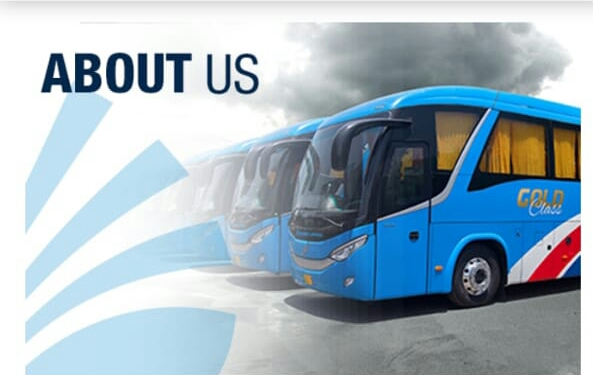

Daewoo express is the first and biggest foriegn investment company with an advanced and organized transport system in Pakistan.It is the only transport company to have a nationwide network with various international trade links.Being a transport service provider the company owns a large fleet of buses.technically advanced workshops to maintain the fleet for the safety of the passangers.state of the Art Terminals.Trainig Institue for Drivers and Machanical staff.
Daewoo Express have been rendering transport facilities since its inception in 1997 to the people of Pakistan.
It is appreciated by the masses as well as by the Governments of Pakistan as well as korea for its consistent success.Media of both countries often express appreciation for the revolutionary accomplishment of the company in a trasport sector,through various channels.Daewoo Express has been rendering transport facilities since its inception in 1997 to tha people of Pakistan.